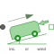
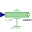

VehicleSimple vehicle model |

|
Diagram
{kind=link}
Information
This information is part of the Modelica Standard Library maintained by the Modelica Association.
This is a simple model of a ground vehicle, comprising the mass, the aerodynamic drag, the rolling resistance and the inclination resistance (caused by the road grade). For all particular resistances, significant variables can be either given by a parameter or input by a time-variable signal.
The vehicle can be driven at the rotational flange flangeR, e.g. by an electric motor and a gearbox.
It is possible to use the vehicle as a passive trailer, leaving the rotational flange flangeR unconnected.
At the translational flange flangeT the vehicle can be coupled with another vehicle,
e.g. as a trailer or to pull a trailer.
It is possible to leave the translational flange flangeT unconnected.
The velocity v and the driven distance s of the vehicle are provided as variables;
the vehicle can be initialized using these variables.
Mass and inertia
Both the translational vehicle mass and the rotational inertias (e.g. the wheels)
are accelerated when the vehicle is accelerated.
This nature is usually put into account for fundamental vehicle analyses
done either in the rotational or translational domain, e.g. when analysing
vehicle's driveline.
Then, the vehicle mass m can be expressed as an additional
equivalent inertia J_eq = m * R2 or
vice versa rotational inertia J as an additional
equivalent mass m_eq = J/R2,
where R is the wheel radius.
Since this model introduces rolling resistance and inclination resistance as well
where just the vehicle mass plays a role,
the approach of equivalent mass/inertia would lead to incorrect simulation results
and shall therefore not be applied here.
Drag resistance
fDrag = Cd*rho*A*(v - vWind)^2/2
Wind velocity is measured in the same direction as velocity of flangeT.
Wind velocity is either constant or prescribed by the input vWind.
Rolling resistance
fRoll = Cr*m*g*cos(alpha)
Rolling resistance coefficient Cr is either constant
or prescribed by the input cr.
Rolling resistance has a crossover from positive to negative velocity within [-vReg, vReg].
The inclination angle α is either constant or prescribed by
the input inclination = tan(α).
This corresponds to the road rise over running distance of 100 m which,
in general, is written as a percentage.
For example for a road rising by 10 m over 100 m the
grade = 10 % and, thus, the parameter
inclinationConstant = 0.1.
Positive inclination means driving uphill, negative inclination means
driving downhill, in case of positive vehicle velocity.
Inclination resistance
fGrav = m*g*sin(alpha)
With the inclination angle α described above.
Parameters (14)
| m |
Value: Type: Mass (kg) Description: Total mass of vehicle |
|---|---|
| g |
Value: Modelica.Constants.g_n Type: Acceleration (m/s²) Description: Constant gravity acceleration |
| J |
Value: Type: Inertia (kg·m²) Description: Total rotational inertia of drive train |
| R |
Value: Type: Length (m) Description: Wheel radius |
| A |
Value: Type: Area (m²) Description: Cross section of vehicle |
| Cd |
Value: Type: Real Description: Drag resistance coefficient |
| rho |
Value: 1.2 Type: Density (kg/m³) Description: Density of air |
| useWindInput |
Value: false Type: Boolean Description: Enable signal input for wind velocity |
| vWindConstant |
Value: 0 Type: Velocity (m/s) Description: Constant wind velocity |
| useCrInput |
Value: false Type: Boolean Description: Enable signal input for Cr |
| CrConstant |
Value: 0.015 Type: Real Description: Constant rolling resistance coefficient |
| vReg |
Value: 1e-3 Type: Velocity (m/s) Description: Velocity for regularization around 0 |
| useInclinationInput |
Value: false Type: Boolean Description: Enable signal input for inclination |
| inclinationConstant |
Value: 0 Type: Real Description: Constant inclination = tan(angle) |
Connectors (5)
Components (12)
| fDrag |
Type: QuadraticSpeedDependentForce Description: Drag resistance |
|
|---|---|---|
| fRoll |
Type: RollingResistance Description: Rolling resistance |
|
| fGrav |
Type: Force Description: Inclination resistance |
|
| inertia |
Type: Inertia |
|
| idealRollingWheel |
Type: IdealRollingWheel |
|
| mass |
Type: Mass |
|
|  | windSpeed |
Type: Speed |
| gravForceGain |
Type: Gain |
|
| constInclination |
Type: Constant |
|
| constWindSpeed |
Type: Constant |
|
| atan |
Type: Atan |
|
| sin |
Type: Sin |
Used in Examples (1)
|
Modelica.Mechanics.Translational.Examples One-dimensional vehicle with driving resistances |